1968
IBM IMS (Information Management System) for NASA Apollo programm
⇓
1969-1970
Relational Model (Edgar Codd)
⇓
1970-1980
SEQUEL
SQL
IMB & Relational Software (ORACLE) solutions
⇓
1980-1990
Relational Database Management System (RDBMS)
⇓
1990 and later
Attempts to solve the major problems
Strict data schema
Object–relational impedance mismatch
⇓
Object-Relational Mapping
Object–Relational Database
⇓
new solution?
⇓
2000-2010 and later
NoSQL
1. Ease of management (don't require query language)
2. Speed of performance of simple queries
3. The storage model is simple and clear
4. Flexible structure
5. Scalability
6. Very good for OOP (especially in a document-oriented database)
7. Optional features to add some strict decisions to the structure
· 2009 10gen
· 2013 MongoDB
· One of the most popular NoSQL systems


· Ease of deployment
· Unified and flexible API (3-5 faster iteration)
· Safety
· Real-Time Data Integration
· Improved scalability
· BSON: Faster search and data processing
· GridFS
Local Server
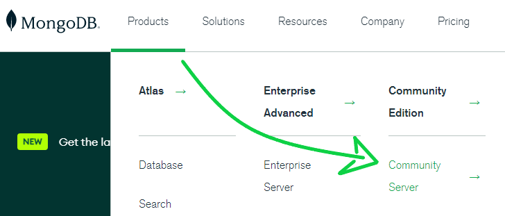
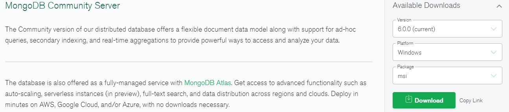
mongodb/bin
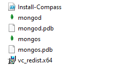mongod: database server MongoDB
mongos: routing service MongoDB
Create path for databases: C:\data\db
Download mongoDB shell
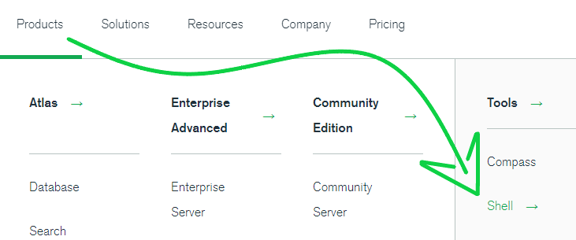 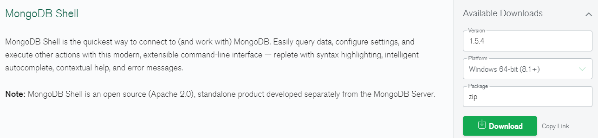Start the server
· Start mongod in mongodb/bin
· Open terminal and enter path to mongod (C:\mongodb\bin\mongod)
Open mongoDB shell
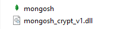 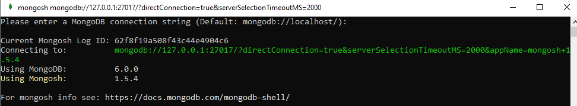Create and Read operations
use newDB
db.education.insertOne({ school: "Rolling-Scopes" })
db.education.find()
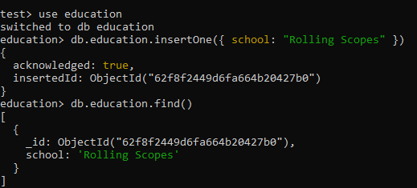Connection to project
npm init -y
npm i mongodb
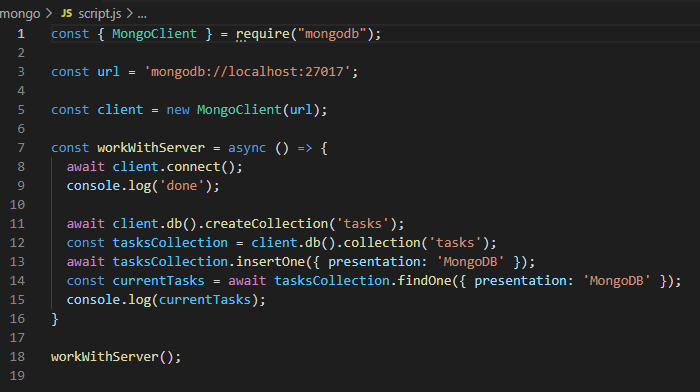 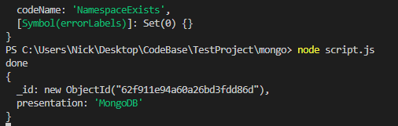On mac
Homebrew (recommended):
/bin/bash -c "$(curl -fsSL https://raw.githubusercontent.com/Homebrew/install/HEAD/install.sh)"
brew tap mongodb/brew
brew install mongodb-community@5.0
· mongosh
· mongod
· mongos
Server start
brew services start mongodb-community@6.0
brew services stop mongodb-community@6.0
mongosh
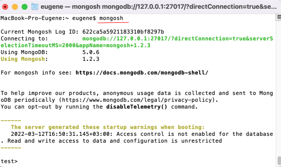Atlas server
Create cluster
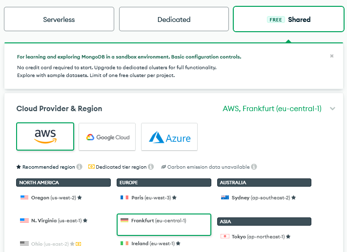Create database user
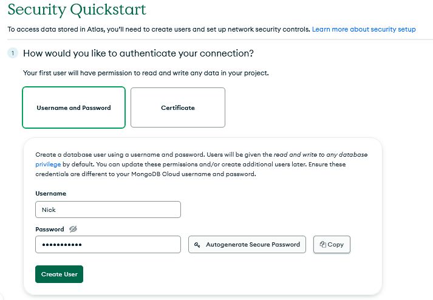Connect to project
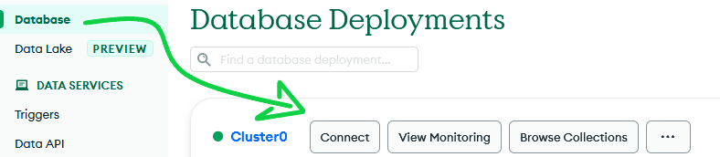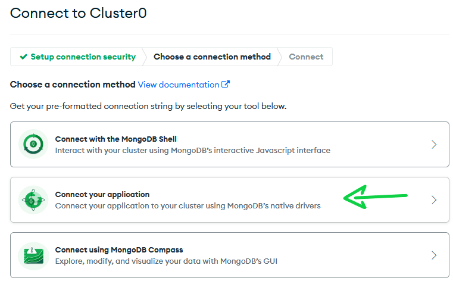
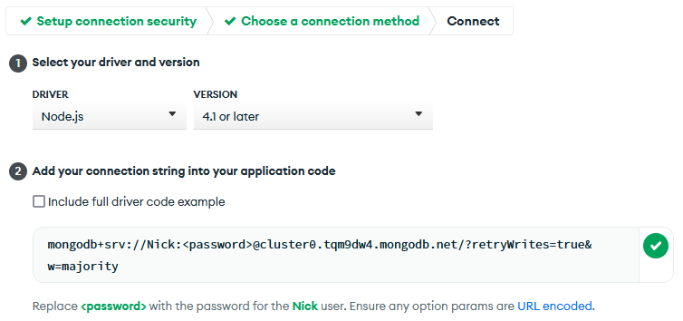
Enter password and project name in URL for connect
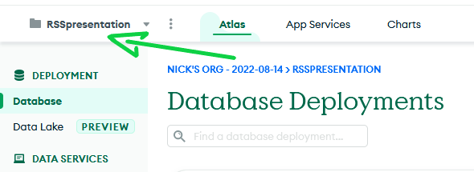 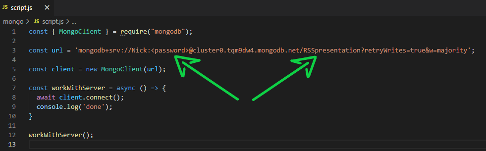MongoDB GUI
Compass
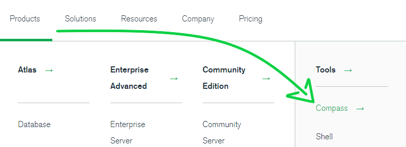 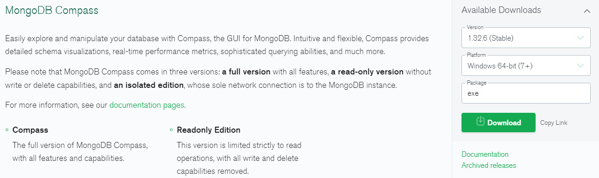Connect
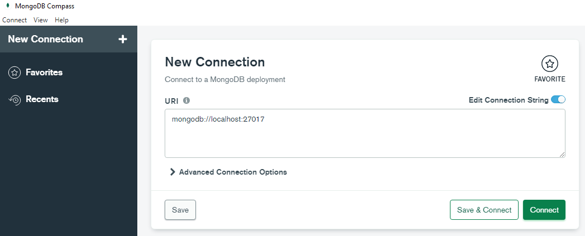View the database and work with the shell
CRUD operations
CRUD in docsRead
database.collection.find()
database.collection.findOne()
Write
database.collection.insertOne()
database.collection.insertMany()
automatically creates _id
Delete
database.collection.deleteOne()
database.collection.deleteMany()
Update
database.collection.updateOne() $set
database.collection.replaceOne()
Update methods
const findDoc = { _id: 465 };
const updateDocument = {
$set: {
z: 42,
},
};
await collection.updateOne(findDoc, updateDocument);
const findDoc = { _id: 465 };
const replacementDocument = {
z: 42,
};
const result = await collection.replaceOne(findDoc, replacementDocument);
Mongoose
Allows you to create strict data interaction schemes
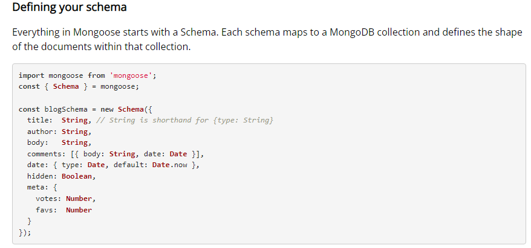Thank you for watching!
Relational modelObject–relational impedance mismatch
Document-oriented database
Relational databases and their problems (Vladimir Kuznetsov)
NoSQL databases (Vladimir Kuznetsov)
MongoDB docs
Metanite MongoDB guide
MongoDB customers
Mongoose